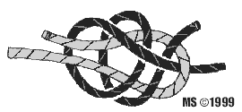

|
|
|
|
|

rodzaje klas wêz³y
zielony |
w tym dziale poznasz wênz³y kture powinien znacz ka¿dy kto chce zostaæ ¿egla¿em RATOWNICZY Wêze³ u¿ywany jest bardzo czêsto, a umiejêtnoœæ sprawnego wi¹zania obowi¹zuje ka¿dego ¿eglarza. Za jego pomoc¹ robi siê na koñcu liny oko do cumowania, mo¿e byæ u¿yty do po³¹czenia dwu lin. Typowe zastosowanie to - zabezpieczanie cz³owieka w trudnych warunkach pracy na pok³adzie, za burt¹, lub na wysokoœci. Pêtla tego wêz³a nie zaciska siê, nawet przy du¿ym obci¹¿eniu. 
Knaga Wêze³ knagowy znajduje zastosowanie przy mocowaniu: szotów, fa³ów, cum na knadze, podwójnym polerze lub ko³ku. Prawid³owo wêze³ knagowy rozpoczyna siê od owiniêcia liny raz dooko³a trzonu knagi, nastêpnie nale¿y linê mocowaæ krzy¿owo na ramionach knagi dwukrotnie. Zakoñczenie wêz³a polega na prze³o¿eniu liny pod ostatnie skrzy¿owanie i zaciœniêcie, tak aby lina trzyma³a siê wêz³a.
ZWIÊZY szotowy Dobrze nadaje siê do wi¹zania lin o niejednakowej gruboœci. Nie nale¿y stosowaæ przy linach mocno obci¹¿onych, nara¿onych na szarpanie i o g³adkich, œliskich powierzchniach.
BRAMSZOTOWY Dobrze nadaje siê do wi¹zania lin o niejednakowej gruboœci. Jest on pewniejszy w pracy ni¿ wêze³ szotowy, mo¿e przenosiæ wiêksze obci¹¿enia, jest te¿ odporny na szarpanie.
FLAGOWY Wêze³ u¿ywany do wi¹zania flag, oraz bander nie maj¹cych chom¹tek i klamer. £atwy do wi¹zania, b³yskawiczny w rozwi¹zywaniu, wystarczy poci¹gn¹æ za wolny koniec liny, aby ca³kowicie siê rozwi¹za³.
¿eglarski Wêze³ s³u¿y do cumowania na palu i do pierœcienia. Wêze³ zapewnia mocny chwyt, nie œlizga siê i nie zaciska. Podwójny chwyt pala czy pierœcienia chroni linê od przecierania siê. |